This is the first post in a series on building a Splunk-based detection lab from scratch. The goal is not just to get Splunk running, but to end up with an environment where I can simulate attacks, collect the resulting telemetry, and write detections against it.
Three virtual machines on an isolated host-only network. Kali attacks the Windows endpoint, Sysmon and the Splunk Universal Forwarder ship the resulting logs to the Splunk server, and analysis happens from there.
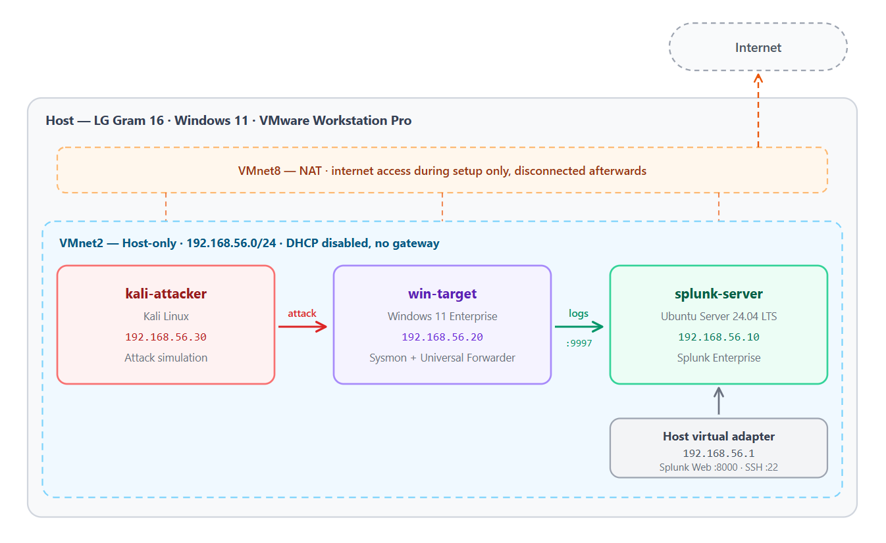
| VM | Role | Static IP | vCPU | RAM | Disk |
|---|---|---|---|---|---|
splunk-server |
Ubuntu Server 24.04 LTS, Splunk Enterprise | 192.168.56.10 | 4 | 8 GB | 100 GB |
win-target |
Windows 11 Enterprise, Sysmon + Universal Forwarder | 192.168.56.20 | 2 | 4 GB | 60 GB |
kali-attacker |
Kali Linux | 192.168.56.30 | 2 | 3 GB | 40 GB |
Each VM gets two network adapters: NAT for internet access during setup, and a host-only adapter (VMnet2) carrying all lab traffic. Once setup is complete, the NAT adapter is disconnected on the Windows and Kali machines so that attack traffic is genuinely contained.
Kali Linux (VMware image, not the ISO): https://www.kali.org/get-kali/#kali-virtual-machines
Ubuntu Server 24.04 LTS: https://ubuntu.com/download/server
Windows 11 Enterprise, 90-day evaluation: https://www.microsoft.com/en-us/evalcenter/download-windows-11-enterprise
I created a dedicated folder named homelab-splunk on my Desktop to hold both the installation media and the virtual machine files.
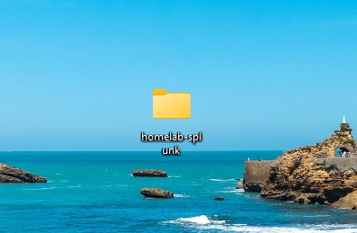
I then went to Windows Security - Virtus & threat protection - Manage settings - Add or remove exclusions - Add an exclusion - Folder, and added only homelab-splunk.
This step is important because when I start attack simulation later, Defender will happily reach into the VM's disk files, detect the payloads sitting inside the guest, and quarantine them and break the lab from the outside.
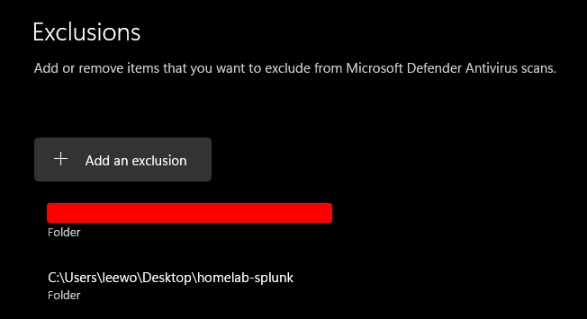
This step creates a dedicated network path where Kali attacks Windows and the resulting logs are sent to Splunk. They key is to make sure that practice traffic stays isolated and does not leak onto my real home network.
Edit - Virtual Network EditorChange Settings on the bottom right in the Virtual Network Editor.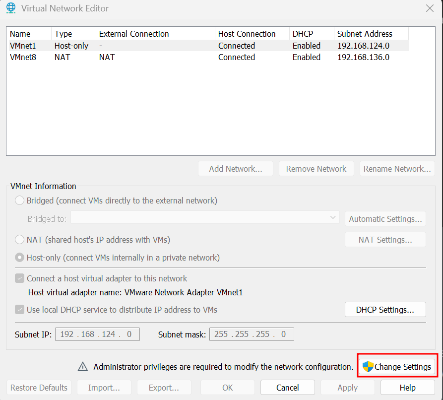
Select Add a Virtual Network and VMnet2.
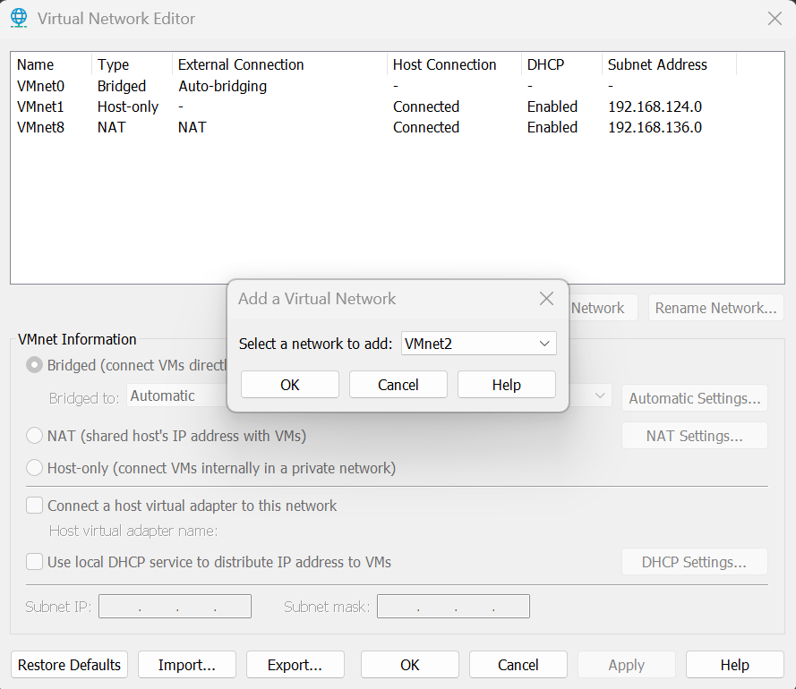
Configure VMnet2 as below:
We disable DHCP so that all three machines can use static IP addresses. The Splunk Forwarder has the Splunk server's IP address hardcoded in its configuration file, so if the IP address changes after every reboot, log forwarding can silently stop working.
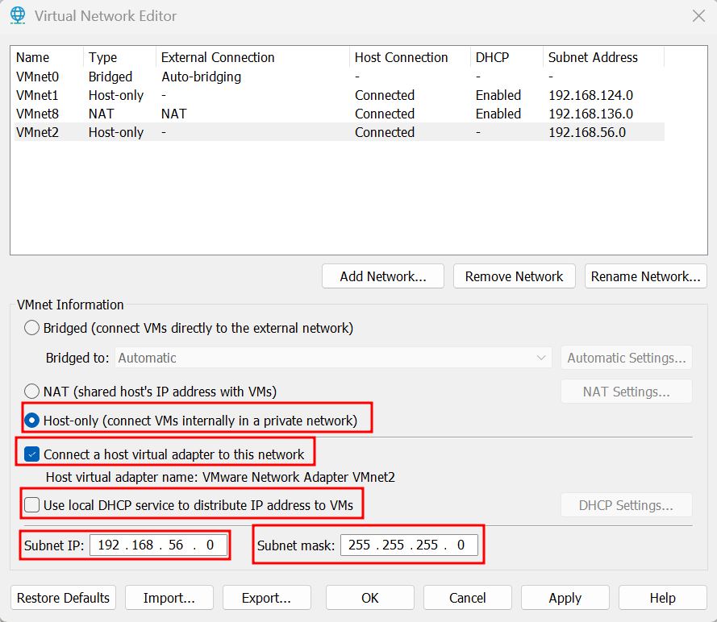
I opened up cmd prompt and entered the ipconfig command. I confirmed that VMnet2 was properly configured.
Ethernet adapter VMware Network Adapter VMnet2:
Connection-specific DNS Suffix . :
Link-local IPv6 Address . . . . . : fe80::c93e:575b:d619:1647%40
IPv4 Address. . . . . . . . . . . : 192.168.56.1
Subnet Mask . . . . . . . . . . . : 255.255.255.0
Default Gateway . . . . . . . . . :
I used File - New Virtual Machine - Custom (advanced) rather than Typical, because the network adapters and disk options need to bet set explicitly.
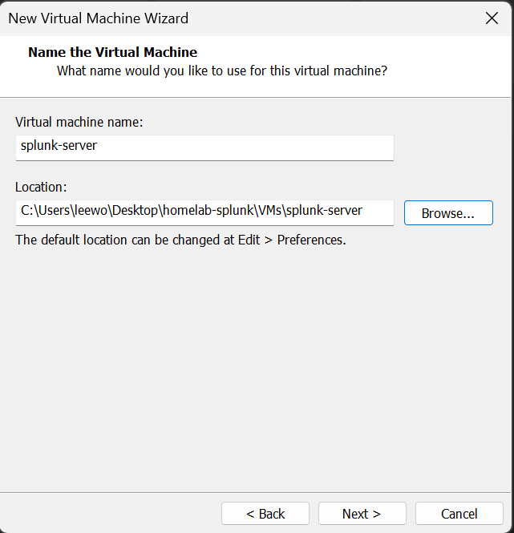
The final virtual machine settings are as below:
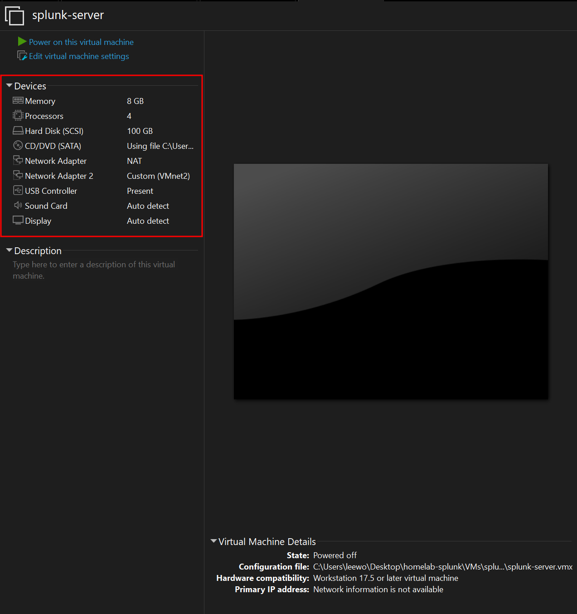
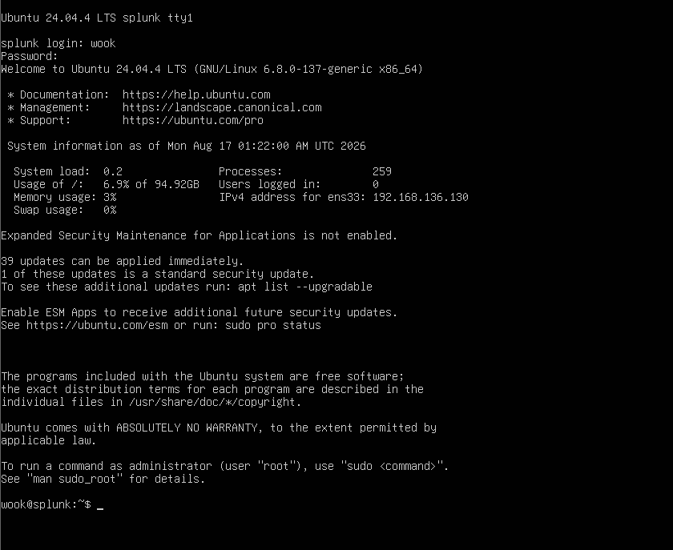
Checking the interfaces with ip -br a returned ens33 and ens34 as configured:
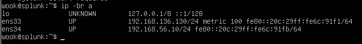
ping -c 3 google.com confirmed the VM had internet access through NAT, and I brought the system up to date before installing anything else:
sudo apt update && sudo apt upgrade -y
sudo reboot
Working through the VMware console is workable but tedious, there is no copy-past, which matters once Splunk configuration files enter the picture. Enabling SSH lets me drive the server from a terminal on the host instead.
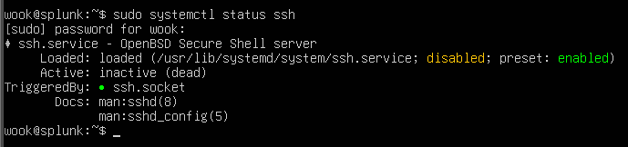
inactive (dead) and disabled are both correct here. Ubuntu 24.04 uses socket activation for SSH: instead of keeping the daemon resident, ssh.socket listens on port 22 and starts ssh.service on demand when a connection arrives. The line that matters is TriggeredBy: ssh.socket; the green dot indicates the socket is active and listening.
From cmd prompt on the host, I entered ssh wook@192.168.56.10 and the connection succeeded.
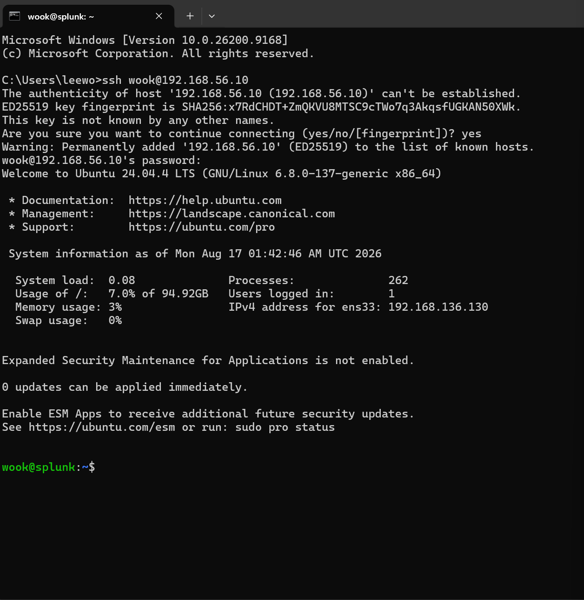
The server is provisioned, reachable, and correctly sized. Part 2 will cover installing Splunk Enterprise, configuring the receiving port, and standing up the Windows endpoint with Sysmon and the Universal Forwarder so that logs actually start flowing.